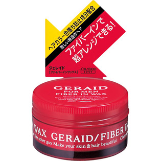

返回列表
产品名称：ジェレイド ファイバーインワックスN

資生堂 ジェレイド ファイバーインワックスN ＿
メーカー 資生堂
JANコード 4901872548132
商品の特徴
激しい無造作ヘアを長時間キープ。固めないので、手ぐしで簡単再整髪。天然トリートメント成分配合で傷んだ髪を補修。タバコなどイヤなニオイをよせつけないスモーキーカット香料配合。
成分・分量
-
用法及び用量
＜使用方法＞
●適量を指にとり、手のひらで十分にのばしてから髪全体にもみ込むようになじませるか、少量ずつ指先でつまむように毛先など動きをつけたい部分につけます。